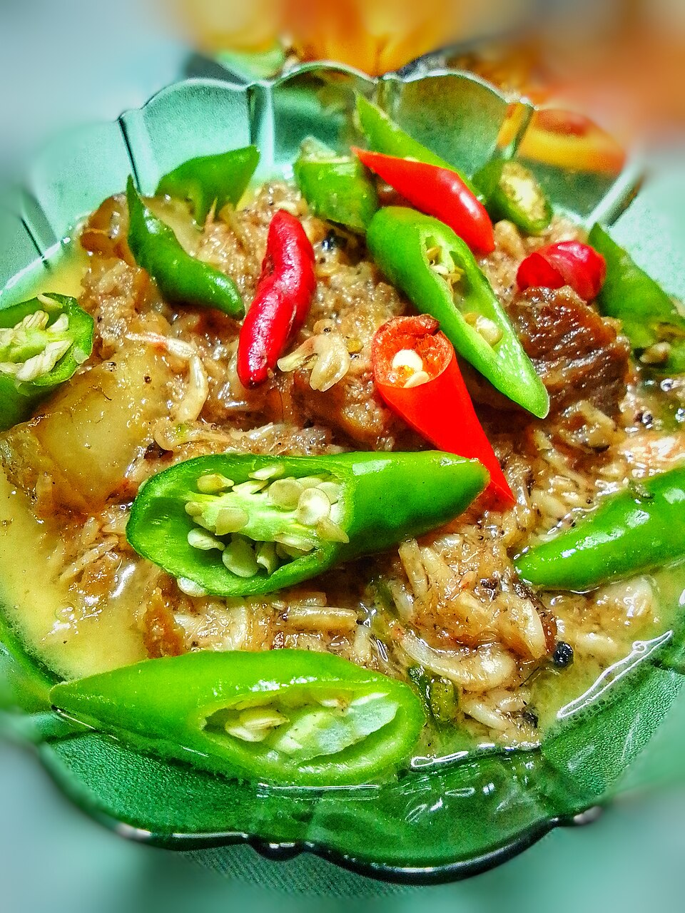

Bicol express

Description
Bicol Express is a popular, spicy Filipino coconut milk-based stew,
traditionally made with pork, chili peppers, and shrimp paste. Originating
in the Bicol region and popularized in Manila, it's known for its creamy,
savory, salty, and spicy flavor profile, served with steamed white rice to
balance the heat. While originally a meat and chili stew, variations now
include seafood, beef, and vegetarian options, with the name inspired by
the Bicol Express train line.
Ingredients
- Pork belly (cubed)
- Coconut milk & cream
- Shrimp paste (bagoong)
- Green and red chili peppers
- Onion, garlic, ginger
- Cooking oil, salt, pepper
Cooking Process
- Sauté garlic, onion, and ginger.
- Add pork and cook until lightly browned.
-
Mix in shrimp paste, then pour coconut milk. Simmer until pork is
tender.
- Add chili peppers and cook for a few minutes.
- Pour in coconut cream, season, and simmer until thick.
- Serve hot with rice.
Back to main page